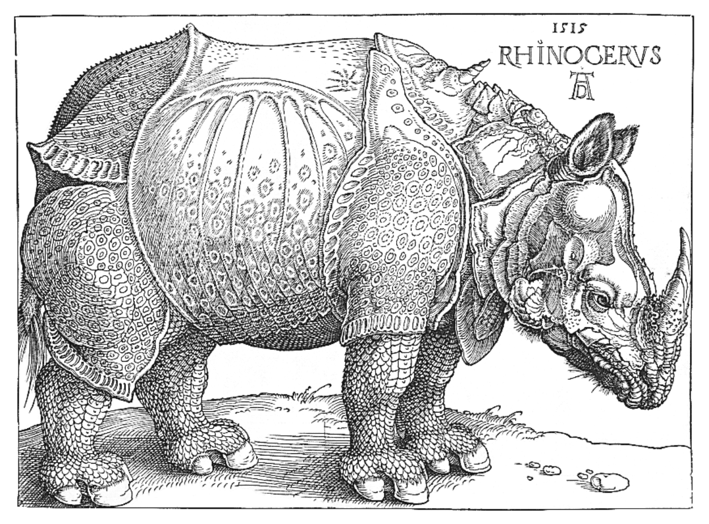

Tufte CSS
Dave Liepmann
Tufte CSS provides tools to style web articles using the ideas demonstrated by Edward Tufte’s books and handouts. Tufte’s style is known for its simplicity, extensive use of sidenotes, tight integration of graphics with text, and carefully chosen typography.
Tufte CSS was created by Dave Liepmann and is now an Edward Tufte project. The original idea was cribbed from Tufte-LaTeX and R Markdown’s Tufte Handout format. We give hearty thanks to all the people who have contributed to those projects.
If you see anything that Tufte CSS could improve, we welcome your contribution in the form of an issue or pull request on the GitHub project: tufte-css. Please note the contribution guidelines.
Finally, a reminder about the goal of this project. The web is not print. Webpages are not books. Therefore, the goal of Tufte CSS is not to say “websites should look like this interpretation of Tufte’s books” but rather “here are some techniques Tufte developed that we’ve found useful in print; maybe you can find a way to make them useful on the web”. Tufte CSS is merely a sketch of one way to implement this particular set of ideas. It should be a starting point, not a design goal, because any project should present their information as best suits their particular circumstances.
Getting Started
To use Tufte CSS, copy tufte.css and the et-book directory of font files to your project directory, then add the following to your HTML document’s head block:
<link rel="stylesheet" href="tufte.css"/>Now you just have to use the provided CSS rules, and the Tufte CSS conventions described in this document. For best results, View Source and Inspect Element frequently.
Fundamentals
Sections and Headings
Organize your document with an article element inside your body tag. Inside that, use section tags around each logical grouping of text and headings.
Tufte CSS uses h1 for the document title, p with class subtitle for the document subtitle, h2 for section headings, and h3 for low-level headings. More specific headings are not supported. If you feel the urge to reach for a heading of level 4 or greater, consider redesigning your document:
[It is] notable that the Feynman lectures (3 volumes) write about all of physics in 1800 pages, using only 2 levels of hierarchical headings: chapters and A-level heads in the text. It also uses the methodology of sentences which then cumulate sequentially into paragraphs, rather than the grunts of bullet points. Undergraduate Caltech physics is very complicated material, but it didn’t require an elaborate hierarchy to organize.
As a bonus, this excerpt regarding the use of headings provides an example of block quotes. In Tufte CSS they are just lightly styled, semantically correct HTML using blockquote and footer elements. See page 20 of The Visual Display of Quantitative Information for an example in print.
In his later booksBeautiful Evidence, Tufte starts each section with a bit of vertical space, a non-indented paragraph, and the first few words of the sentence set in small caps. For this we use a span with the class newthought, as demonstrated at the beginning of this paragraph. Vertical spacing is accomplished separately through <section> tags. Be consistent: though we do so in this paragraph for the purpose of demonstration, do not alternate use of header elements and the newthought technique. Pick one approach and stick to it.
Text
Although paper handouts obviously have a pure white background, the web is better served by the use of slightly off-white and off-black colors. Tufte CSS uses #fffff8 and #111111 because they are nearly indistinguishable from their ‘pure’ cousins, but dial down the harsh contrast. We stick to the greyscale for text, reserving color for specific, careful use in figures and images.
In print, Tufte has used the proprietary Monotype BemboSee Tufte’s comment in the Tufte book fonts thread. font. A similar effect is achieved in digital formats with the now open-source ETBook, which Tufte CSS supplies with a @font-face reference to a .ttf file. In case ETBook somehow doesn’t work, Tufte CSS shifts gracefully to other serif fonts like Palatino and Georgia.
Also notice how Tufte CSS includes separate font files for bold (strong) and italic (emphasis), instead of relying on the browser to mechanically transform the text. This is typographic best practice.
If you prefer sans-serifs, use the sans class. It relies on Gill Sans, Tufte’s sans-serif font of choice.
Links in Tufte CSS match the body text in color and do not change on mouseover or when clicked. Here is a dummy example that goes nowhere. These links are underlined, since this is the most widely recognized indicator of clickable text. Blue text, while also a widely recognizable clickable-text indicator, is crass and distracting. Luckily, it is also rendered unnecessary by the use of underlining.
As always, these design choices are merely one approach that Tufte CSS provides by default. Other approaches can also be made to work. The goal is to make sentences readable without interference from links, as well as to make links immediately identifiable even by casual web users.
Epigraphs
The English language . . . becomes ugly and inaccurate because our thoughts are foolish, but the slovenliness of our language makes it easier for us to have foolish thoughts.
For a successful technology, reality must take precedence over public relations, for Nature cannot be fooled.
I do not paint things, I paint only the differences between things.
If you’d like to introduce your page or a section of your page with some quotes, use epigraphs. Modeled after chapter epigraphs in Tufte’s books (particularly Beautiful Evidence), these are blockquote elements with a bit of specialized styling. Quoted text is italicized. The source goes in a footer element inside the blockquote. We have provided three examples in the epigraph of this section, demonstrating shorter and longer quotes, with and without a paragraph tag, and showing how multiple quotes within an epigraph fit together with the use of a wrapper class.
Sidenotes: Footnotes and Marginal Notes
One of the most distinctive features of Tufte’s style is his extensive use of sidenotes.This is a sidenote. Sidenotes are like footnotes, except they don’t force the reader to jump their eye to the bottom of the page, but instead display off to the side in the margin. Perhaps you have noticed their use in this document already. You are very astute.
Sidenotes are a great example of the web not being like print. On sufficiently large viewports, Tufte CSS uses the margin for sidenotes, margin notes, and small figures. On smaller viewports, elements that would go in the margin are hidden until the user toggles them into view. The goal is to present related but not necessary information such as asides or citations as close as possible to the text that references them. At the same time, this secondary information should stay out of the way of the eye, not interfering with the progression of ideas in the main text.
Sidenotes consist of two elements: a superscript reference number that goes inline with the text, and a sidenote with content. To add the former, just put a label and dummy checkbox into the text where you want the reference to go, like so:
<label for="sn-demo"
class="margin-toggle sidenote-number">
</label>
<input type="checkbox"
id="sn-demo"
class="margin-toggle"/>You must manually assign a reference id to each side or margin note, replacing “sn-demo” in the for and the id attribute values with an appropriate descriptor. It is useful to use prefixes like sn- for sidenotes and mn- for margin notes.
Immediately adjacent to that sidenote reference in the main text goes the sidenote content itself, in a span with class sidenote. This tag is also inserted directly in the middle of the body text, but is either pushed into the margin or hidden by default. Make sure to position your sidenotes correctly by keeping the sidenote-number label close to the sidenote itself.
For optimal readibility of sidenotes, enclose the main text in the section tag.
If you want a sidenote without footnote-style numberings, then you want a margin note.
This is a margin note. Notice there isn’t a number preceding the note.
On large screens, a margin note is just a sidenote that omits the reference number. This lessens the distracting effect taking away from the flow of the main text, but can increase the cognitive load of matching a margin note to its referent text. However, on small screens, a margin note is like a sidenote except its viewability-toggle is a symbol rather than a reference number. This document currently uses the symbol ⊕ (⊕), but it’s up to you.
Margin notes are created just like sidenotes, but with the marginnote class for the content and the margin-toggle class for the label and dummy checkbox. For instance, here is the code for the margin note used in the previous paragraph:
<label for="mn-demo" class="margin-toggle">⊕</label>
<input type="checkbox" id="mn-demo" class="margin-toggle"/>
<span class="marginnote">
This is a margin note. Notice there isn’t a number preceding the note.
</span>Figures in the margin are created as margin notes, as demonstrated in the next section.
Figures
Tufte emphasizes tight integration of graphics with text. Data, graphs, and figures are kept with the text that discusses them. In print, this means they are not relegated to a separate page. On the web, that means readability of graphics and their accompanying text without extra clicks, tab-switching, or scrolling.
Figures should try to use the figure element, which by default are constrained to the main column. Don’t wrap figures in a paragraph tag. Any label or margin note goes in a regular margin note inside the figure. For example, most of the time one should introduce a figure directly into the main flow of discussion, like so:

p tag, as seen to the right of this paragraph.
If you need a full-width figure, give it the fullwidth class. Make sure that’s inside an article, and it will take up (almost) the full width of the screen. This approach is demonstrated below using Edward Tufte’s English translation of the Napoleon’s March data visualization. From Beautiful Evidence, page 122-124.

One obstacle to creating elegant figures on the web is the difficulty of handling different screen sizes, especially on the fly. Embedded iframe elements are particularly troublesome. For these instances we provide a helper class, iframe-wrapper, the most common use for which is probably YouTube videos, e.g.
<figure class="iframe-wrapper">
<iframe width="853" height="480" src="https://www.youtube.com/embed/YslQ2625TR4" frameborder="0" allowfullscreen></iframe>
</figure>You can use this class on a div instead of a figure, with slightly different results but the same general effect. Experiment and choose depending on your application.
Code
Technical jargon, programming language terms, and code samples are denoted with the code class, as I’ve been using in this document to denote HTML. Code needs to be monospace for formatting purposes and to aid in code analysis, but it must maintain its readability. To those ends, Tufte CSS follows GitHub’s font selection, which shifts gracefully along the monospace spectrum from the elegant but rare Consolas all the way to good old reliable Courier.
Extended code examples should live in a code element within a pre element. This adds control over indentation and overflow as well:
;; Some code examples in Clojure. This is a comment.
;; applying a function to every item in the collection
(map tufte-css blog-posts)
;;;; if unfamiliar, see http://www.lispcast.com/annotated-map
;; side-effecty loop (unformatted, causing text overflow) - from https://clojuredocs.org/clojure.core/doseq
(doseq [[[a b] [c d]] (map list (sorted-map :1 1 :2 2) (sorted-map :3 3 :4 4))] (prn (* b d)))
;; that same side-effecty loop, formatted
(doseq [[[a b] [c d]] (map list
(sorted-map :1 1 :2 2)
(sorted-map :3 3 :4 4))]
(prn (* b d)))
;; If this proselytizing has worked, check out:
;; http://howistart.org/posts/clojure/1ImageQuilts
Tufte CSS provides support for Edward Tufte and Adam Schwartz’s ImageQuilts. See the ET forum announcement thread for more on quilts. Some have ragged edges, others straight. Include these images just as you would any other figure.
This is an ImageQuilt surveying Chinese calligraphy, placed in a full-width figure to accomodate its girth:

Here is an ImageQuilt of 47 animal sounds over and over, in a figure constrained to the main text region. This quilt has ragged edges, but the image itself is of course still rectangular.

Animated Margin Notes
Sidenotes can hold more than text. An inline SVG with CSS @keyframes stays crisp at any resolution, inherits currentColor so it adapts to dark mode automatically, and requires no external files or JavaScript — ideal for algorithm diagrams alongside prose.
The margin note here animates a tiled CUDA matrix multiplication.Tiled CUDA matmul: each of the four thread blocks computes a 2×2 output tile of C (green) by loading rows of A (amber) and columns of B (blue) into shared memory. On hardware, all four blocks run concurrently. Each of four CUDA thread blocks claims a 2×2 output tile, loading the corresponding rows of A and columns of B into shared memory before computing the dot products. The sequential view here shows which data each block touches; on real hardware all four blocks run in parallel, which is exactly why tiling reduces redundant global-memory traffic.
Animated Canvas 2D Sidenote
Canvas 2D swaps SVG's declarative model for an explicit JavaScript loop — every frame you clear the canvas, update state, and redraw from scratch.Immediate-mode Canvas 2D: three dots bounce freely inside a box. Each frame calls clearRect, moves every dot, and redraws — no retained scene graph, just pixels overwritten sixty times a second. This makes Canvas 2D natural for physics and particle systems where every object's position changes each frame regardless. The trade-off is that nothing is preserved between frames — if you stop calling requestAnimationFrame, the canvas simply freezes on its last painted state.
Animated WebGPU
WebGPU exposes the full modern GPU pipeline in the browser. A compute shader performs the matrix multiplication tile by tile, writing results into a shared storage buffer; the vertex shader reads that same buffer to position a quad for every matrix cell; the fragment shader reads it again to colour cells amber (A rows), blue (B columns), or green (C tiles). All three stages run within a single command encoder — the GPU guarantees compute output is visible to the render pass that follows.Tiled 4×4 matmul on the GPU. Each step the compute shader fills one 2×2 tile of C (green); vertex and fragment shaders read the same storage buffer to render the grid. Amber rows of A and blue columns of B show the data each tile reads; fragment opacity reflects actual computed values. Unlike SVG keyframes or Canvas 2D, no CPU draws anything — the GPU computes and visualises simultaneously, all three shader stages sharing one buffer inside a single command encoder submission.
Epilogue
Many thanks go to Edward Tufte for leading the way with his work. It is only through his kind and careful editing that this project accomplishes what it does. All errors of implementation are of course mine.